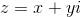
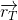
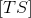
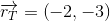
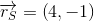
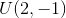

Coordonatele unui vector în plan
Despre vectori în plan am vorbit și în primul capitol. Să reluăm puțin acea parte și să aducem completările necesare.
Fie un punct din planul  . Vectorul reprezentă versorul (vectorul unitate) pe axa
. Vectorul reprezentă versorul (vectorul unitate) pe axa  , iar vectorul
, iar vectorul  este versorul axei
este versorul axei  .
.
.jpg)
Vectorul  se numește vector legat sau vectorul de poziție al punctului
se numește vector legat sau vectorul de poziție al punctului  , notat . Descompunerea vectorul după versorii , respectiv este:
, notat . Descompunerea vectorul după versorii , respectiv este:
.
Coordonatele punctului coincid cu coordonatele vectorul și notăm:
.
Dacă avem vectorul , unde  , respectiv
, respectiv  sunt puncte din planul , atunci coordonatele acestui vector sunt:
sunt puncte din planul , atunci coordonatele acestui vector sunt:
.
Modulul (lungimea) vectorului este notat și se calculează după aceeași formulă după care calculam distanța dintre două puncte:
 .
.
Dacă avem punctul , am amintit mai sus faptul că vectorului de poziție îi putem asocia numărul complex , unde  reprezintă partea reală a acestui număr, iar
reprezintă partea reală a acestui număr, iar  partea imaginară a lui
partea imaginară a lui  . Astfel, în subcapitolul următor vom prezenta operațiile cu vectori legați în paralel cu operațiile cu numere complexe.
. Astfel, în subcapitolul următor vom prezenta operațiile cu vectori legați în paralel cu operațiile cu numere complexe.
Operații cu vectori legați. Coordonatele sumei vectoriale. Coordonatele produsului dintre un vector şi un număr real
În cele ce urmează vom trata următoarele noțiuni:
- Egalitatea a doi vectori legați.
- Adunarea a doi vectori legați
- Înmulțirea unui vector legat cu un scalar.
- Împărțirea unui segment într-un raport dat.
Egalitatea a doi vectori legați
Fie vectorii de coordonate:
,
respectiv
.
Definiția G22: Egalitatea a doi vectori
Spunem că vectorii  și sunt egali dacă și numai dacă pe componente aceștia coincid.
Matematic, avem că:
.
Acestor doi vectori li se asociază numerele complexe:
 ,
,
respectiv
.
Cele două numere complexe sunt egale, dacă părțile lor reale, respectiv părțile lor imaginare coincid, adică:
.
Adunarea a doi vectori legați
Fie vectorii de coordonate
Suma vectorilor și se notează .
Definiția G23: Coordonatele vectorului sumă
Coordonatele vectorului sumă sunt egale cu suma componentelor vectorilor.
Astfel, avem:
.
Acestor doi vectori le asociem numerele complexe:
Suma celor două numere complexe este:
.
Înmulțirea unui vector legat cu un scalar
Fie vectorul și  un număr real.
un număr real.
Definiția G24: Înmulțirea unui vector cu un scalar
A înmulți vectorul cu scalarul  înseamnă a-i înmulții fiecare componentă cu acest număr astfel:
înseamnă a-i înmulții fiecare componentă cu acest număr astfel:
.
Acestui vector îi asociem numărul complex:
.
Înmulțirea acestui număr complex cu scalarul este:
.
Observație:
Fie vectorul . Spunem că vectorul este opusul vectorului .
Împărțirea unui segment într-un raport dat
Despre acest lucru am vorbit și în capitolele anterioare; acum vom aminti doar coordonatele.
Fie trei puncte , și  situate ca în figura de mai jos:
situate ca în figura de mai jos:
.jpg)
Dacă raportul , atunci coordonatele punctului se vor calcula astfel:
,
respectiv
.
În particular, dacă este chiar mijlocul segmentului , atunci  , iar coordonatele vor fi de forma:
, iar coordonatele vor fi de forma:
,
respectiv
.
Dacă punctele , și sunt situate ca în figura de mai jos,
.jpg)
atunci ele reprezintă vârfurile unui triunghi.
Notăm cu centrul de greutate al acestui triunghi. Atunci coordonatele punctului se calculează astfel:
,
respectiv
.
Aplicații
Pentru noțiunile prezentate mai sus, profesorii de matematică din cadrul echipei Liceunet ți-au pregătit următoarele exemple și exerciții rezolvate complet.
- Fie vectorii
 și
și  scriși sub formă analitică astfel:
scriși sub formă analitică astfel:
,
respectiv
.
Trebuie să găsim numerele reale  , știind că cei doi vectori sunt egali.
, știind că cei doi vectori sunt egali.
Soluție:
Folosind Definiția G21: ( Egalitatea a doi vectori ), arătăm că acești doi vectori sunt egali, dacă verifică în același timp condițiile:
.
Așadar, pentru ca cei doi vectori să fie egali, trebuie ca numerele reale să fie egale cu , respectiv .
Fie vectorii , respectiv . Să se afle suma acestor vectori, iar vectorul sumă să se exprime în formă analitică în funcție de versorii , respectiv
.
Rezolvare:
Conform Definiției G22: Coordonatele vectorului sumă, obținem că:
Așadar, vectorul sumă a vectorilor dați are coordonatele .
Scris sub formă analitică, vectorul sumă este:
.
- Fie vectorii și . Să se calculeze coordonatele punctelor
 și
și  , atunci când:
, atunci când: - .
- .
Rezolvare:
- Aflăm coordonatele punctului :
.
- Aflăm coordonatele punctului :
.
Observație:
Vectorul se numește opusul vectorului .
- Fie punctele , , respectiv  și
![M\in[TU]](../../media/webbooks/616/5061/images/equations/jjls2g2lbfylmk2ud_pdpw==.gif) , astfel încât
, astfel încât ![[TM]=[MU]](../../media/webbooks/616/5061/images/equations/o8boyliy9v2pclmwt_a4ua==.gif) , iar punctul este centrul de greutate al triunghiului . Să se calculeze coordonatele punctelor , respectiv .
, iar punctul este centrul de greutate al triunghiului . Să se calculeze coordonatele punctelor , respectiv .
Rezolvare:
Folosind formulele date în secțiunea anterioară, la pagina „Împărțirea unui segment într-un raport dat”, calculăm coordonatele punctului :
.
.
Așadar, punctul va avea coordonatele .
Pentru punctul , avem următoarele formule:
.
.
Deci, centrul de greutate al triunghiului va avea coordonatele .